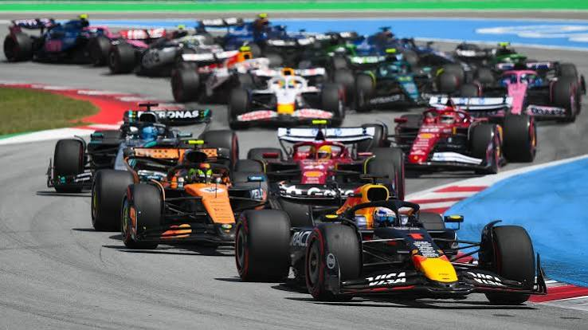

Estrategia, lluvia y velocidad: La previa del Gran Premio de este domingo

El circo de la Fórmula 1 aterriza en uno de los circuitos más exigentes del calendario. Con el campeonato de pilotos en su fase decisiva, la degradación de los neumáticos y la alta probabilidad de lluvia prometen un fin de semana lleno de dramatismo en el trazado.
Las claves técnicas del circuito
Los equipos han introducido importantes paquetes de mejoras aerodinámicas en sus monoplazas para optimizar la velocidad en las rectas largas y la estabilidad en las curvas rápidas. La gestión del DRS y los pasos por pit lane serán determinantes.
Horarios del fin de semana
- Entrenamientos Libres: Viernes — 11:30 h
- Clasificación: Sábado — 15:00 h
- Carrera (Gran Premio): Domingo — 15:00 h
Con solo dos puntos de diferencia en la cima de la clasificación general, un error en la clasificación del sábado podría dejar fuera del podio a cualquiera de los favoritos.